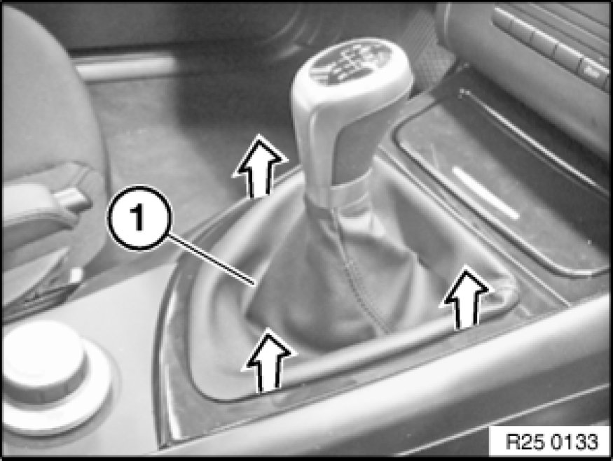
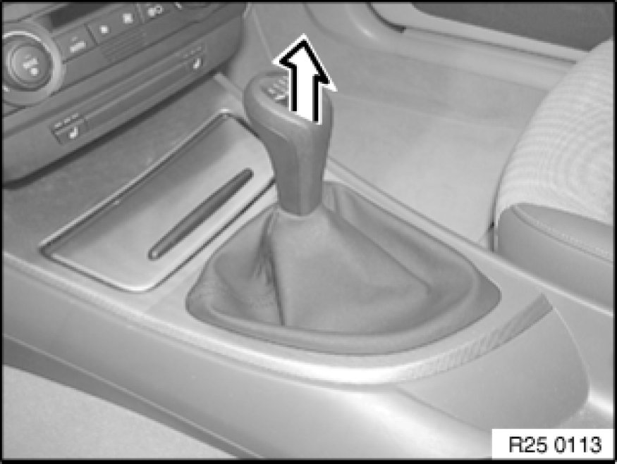
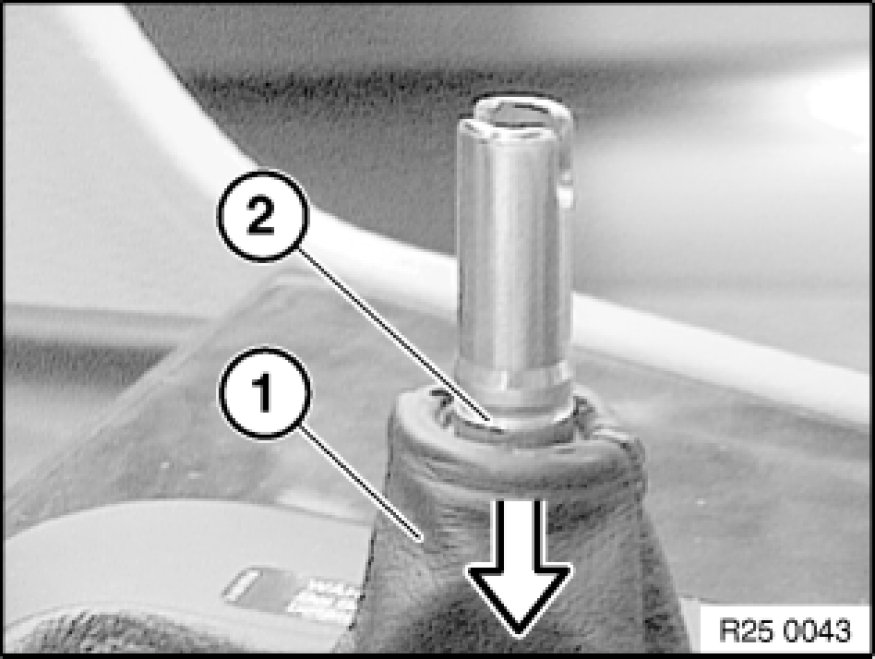

25 11 071 Replacing Knob for Shift Lever
25 11 071 - Replacing knob for shift lever

Warning!
As from 03/07 there are two different versions. Version 2 can give rise to damage if incorrectly removed.
Version 1:Shift lever knob and shift lever cover separate.
Version 2:Shift lever knob and shift lever cover are a single part.

Version 1 (shift lever knob and shift lever cover separate):
Press installation frame of gaiter (1) together a little and remove gaiter from centre console.
Important!
Start removing at front left, otherwise the frame may be damaged.

Note:
Do not twist shift lever knob during removal as this would cause the turning lock in the knob to shear off.
Tug firmly to remove knob.
Installation:
Fit shift lever knob on shift lever, align and press on until it snaps noticeably into place.

Installation:
Push gaiter (1) down until groove (2) is fully exposed.
Version 2 (shift lever knob and shift lever one single part):
Press installation frame of gaiter (1) together a little and remove gaiter from centre console.
Important!
Start removing at front left, otherwise the frame may be damaged.
Note:
Do not twist knob during removal as this would cause the turning lock in the knob to shear off.
Tug firmly to remove knob.
Installation:
Fit knob on shift lever, align and press on until it snaps noticeably into place.